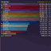

SHEET 65 · ADDONS + COACH
v3 · 22 Oct, night · the coach now answers your four questions, plus what other tools do; the addons part is unchanged
Two things: your addon updates in the morning brief, now with each addon's own icon, and the rotation coach, now built around the four things you want to know. You ask Aang; Aang answers in one line; the line opens the report in Samara. There is no ask box on that page: you keep asking Aang.
Every software name carries its iconEvery site carries its bookmark iconOne place to chat: AangReports open in Samara
WHAT TO PICK Addons: A all ticked, or B safe ones ticked (my pick)? · Coach: A four answers (my pick) or B report card?
1ADDONS IN THE MORNING BRIEF
A new Addons slip under Today. Each row: tick, the addon's own icon, name, old → new, one short line, and a warning tag when there is one (now in plain readable words). Aang only does this with  WoW closed.
WoW closed.
1What starts ticked
A: every update ticked. B: risky ones start unticked (Big jump, Not for this patch). Errors stay ticked: the update is often the fix.
BSAFE ONES TICKED I'D PICK THIS
→After "Update ticked"
Aang drives  CurseForge (minimized), checks each one really changed, then says one line. Every name in it carries its icon.
CurseForge (minimized), checks each one really changed, then says one line. Every name in it carries its icon.
2ROTATION COACH: ANSWERS YOUR QUESTIONS
Your note on v2: "Did I miss something, could I have done better? What do other addons like this do?" Fair: v2 gave two tips but never said what you missed, how you compare, why you died or if you're improving. v3 answers exactly those, the way the big tools do (see the box below), still in plain words with icons and no ask box.
Answers to your question: what do other tools do?
WAWoWAnalyzerA checklist for your spec (did you use your big cooldowns, keep things up, waste nothing), then a list of fixes marked major / average / minor. Players like it because it says exactly what to fix.
WLWarcraft LogsOne coloured number: how you rank against everyone of your spec on that boss (grey, green, blue, purple, orange, pink). No fixes; people compare their log with a slightly better player's. Players warn it can get toxic.

Details!
Damage meter plus a death log: the last few hits before you died. On Forever's engine addons can't read combat numbers any more, which is why Aang reads the game's own combat log.WFWipefestScores the raid's mechanics: who stood in what, who died early.
RRaider.IO, Hekili, ArchonOne score for dungeons; a "press this next" icon during the fight; what top players pick. Not "how did I do".
What players wantConcrete fixes, credit for staying alive, compare with someone a bit better (not the #1 player), and no public shaming.
What Aang can and can't do. From your combat log alone: what you pressed and when, what you missed, how you died, and how you compare to other players of your class in the same raid (everyone is in the log). Not possible yet: ranking you against Arms warriors everywhere. Warcraft Logs doesn't cover WoW: Forever; a new site, foreverlogs.gg, has started, and Aang could read your rank there later if it gets one. Full notes: docs/COACH-RESEARCH.md.
→You ask Aang, he answers in one line
YOU, IN THE TYPING BOXhow was my rotation on that last boss?
1AANG · THE LINK OPENS THE REPORT IN SAMARA
AFour answers I'D PICK THISYour four questions are the four headings, each with a one-word answer and a line or two under it. The one thing to fix first sits at the bottom. Easiest to read.
ABUJUJU · ARMS WARRIOR · GARR
BReport cardThe WoWAnalyzer way, made plain: a grade, your rotation as five rules from worst to best (red, amber, green, each with its fix), and on the right your deaths, the other warriors in your raid, and your last five weeks. More to look at, more detail.
→B after a wipe: why you diedClick Baron Geddon: when you died, what hit you last, and what to do next time. (A shows the same in its "Why did I die?" tile.)
?THE RULES IT FOLLOWS
Four questionsDid I press the right buttons? How do I compare? Why did I die? Am I getting better? Every report answers all four.
Worst firstMisses are red, small slips amber, good things green, and the biggest miss is always on top, with its fix in one sentence.
Compare fairlyOnly with players of your class in the same fight. Never a world ranking it can't back up.
DeathsWhen you die: when, what hit you last, and what to do next time.
Words it never usesUptime, debuff, proc, DPS, parse, or a table of numbers.
QuestionsAsk Aang, anywhere you already talk to him. The page has no chat of its own.
- Real today: your 17 addon names and versions, and BugGrabber errors from RestedXP Guide, BlizzMove, Auctionator and Details. The addon icons are CurseForge's own (read from its local cache, nothing downloaded); CurseForge's and WoW's are from their programs on this PC.
- Stand-ins: the ability icons, class crests and status marks are hand-drawn pixel art (the real page would use the game's own icons). WoWAnalyzer, Warcraft Logs, Wipefest and Raider.IO show placeholder monograms: Samara has not saved their bookmark icons yet; they fill in after one visit. Reddit's is Samara's own saved icon.
- Made up for the picture: the new versions, the "what changed" lines, every fight, rule, grade, raid-mate and week. Derek's spec is a guess; the real one comes from the log. The real rules per spec come from the spec guide.